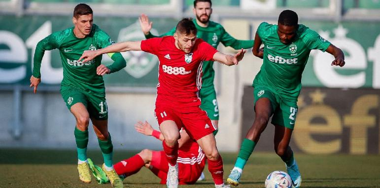

Спорт
Чрез гол от дузпа на Преслав Йорданов Пирин сензационно победи Лудогорец с 1:0 като гост и поднесе неочакван подарък на ЦСКА в битката за титлата. Благоевградчани се бранеха храбро и успяха да вземат важни три точки в борбата си оставане в елита. Пирин се изравни по точки с Хебър на 14-15-о място. Двата отбора имат по 16 точки. Играчите на Лудогорец доминираха през целия мач, отправиха 19 удара, изпълниха 9 корнера, но топката така и не влезе във вратата на Пирин. Поражението е второ за разградчани в шампионата и отдалечи тима на четири точки от лидера ЦСКА, който вчера завърши 1:1 с Локомотив Пловдив. Лудогорец започна по-активно на "Хювефарма Арена", но трудно намираше пролуки в добре подредената защита на гостите. Дебют за разградчани записа новото попълнение Тодор Неделев, който в 6-а минута изведе Кирил Десподов от дясно, последва центриране, но Раи Насименто не успя да нанесе точен удар. Десподов изведе Лудогорец с капитанската лента, след като титулярният капитан Антон Недялков получи контузия на загрявката и не се появи в игра. В 16-а минута отново Десподов проби по десния флаг и центрира, но Игор Тиаго стреля с глава покрай левия страничен стълб. Пирин предимно се бранеше, но в 30-а минута изпусна чиста ситуация за гол, след като Чебрайло Макрецкис бе изведе сам срещу вратаря Падт, но не успя да го преодолее. В самия край на първата част Даниил Кондраков получи дълъг пас, преодоля Франко Русо и бе фаулиран на линията на наказателното поле. След дълго преглеждане на ситуацията с ВАР главният рефер Ивелин Занев отсъди дузпа за Пирин, която опитният Преслав Йорданов хладнокръвно превърна в гол и Пирин се оттегли с гол аванс на почивката. Треньорът на Лудогорец Анте Шимунджа опита да освежи атаката на своя тим и на полувремето замени неубедителните Клод Гонсалвеш и Раи Насименто, включвайки в игра Педро Нареси и Спас Делев. С началото на второто полувреме шампионите вдигнаха темпото и обсадиха вратата на гостите от Благоевград. В 67-а минута Десподов стреля отблизо, но Ковальов спаси, а в последвалото разбъркване никой от разградския отбор не успя да нанесе завършващ удар. Десетина минути по-късно влезлият като резерва Доминик Янков направи пропуск, след като от чиста позиция стреля над вратата. До края Лудогорец опита всичко, но дори даденото от съдията десетминутно продължение не помогна на тима да стигне поне до изравнителен гол. Копирано от standartnews.com